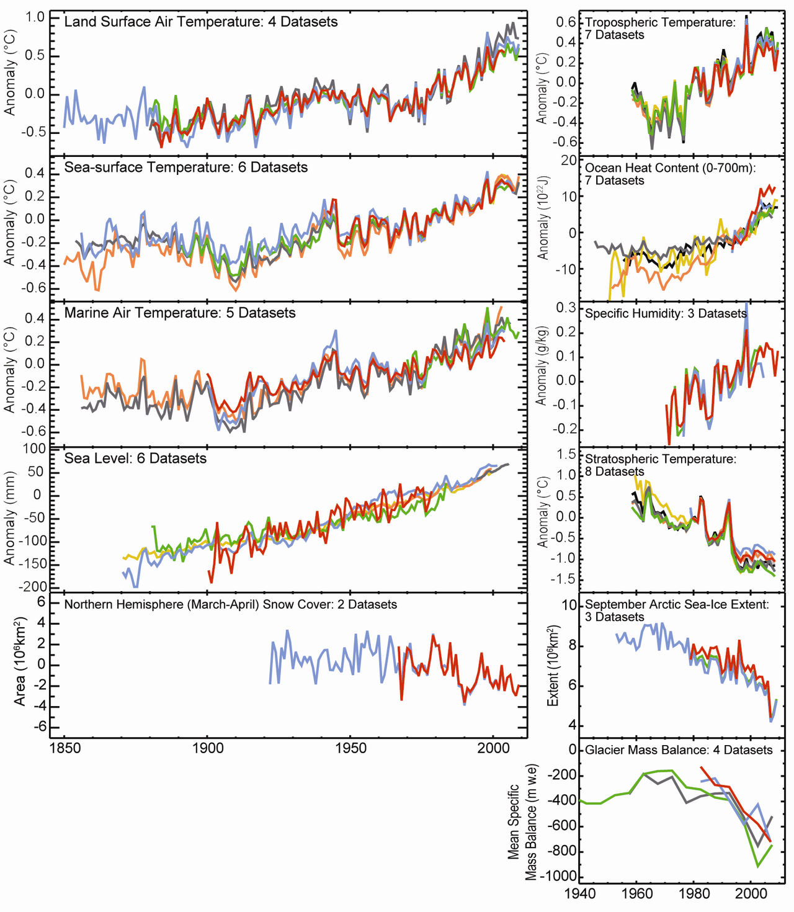

<h1>Kimi - Mid - M1 — Balancimi i ekuacioneve</h1>
<figure class="photo"></figure>


<ul>
<li>C₃H₈ + 5O₂ → 3CO₂ + 4H₂O</li>
<li>4Fe + 3O₂ → 2Fe₂O₃</li>
<li>N₂ + 3H₂ → 2NH₃</li>
<li>Numri i atomeve i barabartë në të dyja anët</li>
<li data-aoi="kritike" data-critical="true">Ndrysho koeficientët, jo indekset</li>
</ul>

